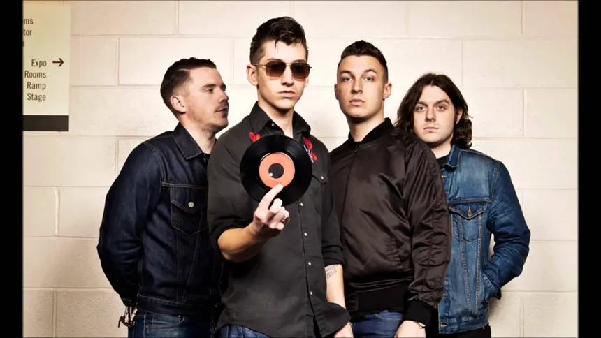
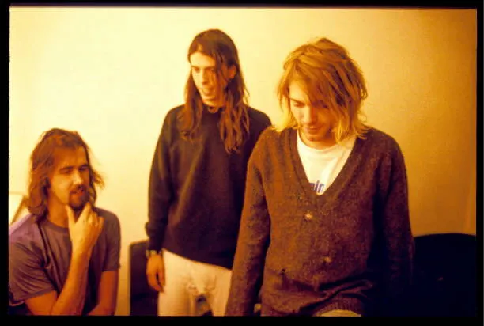
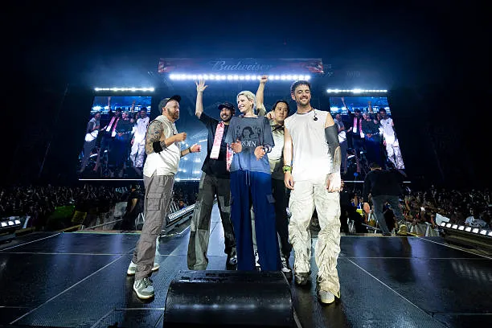

Artistas
Orden alfabético
Imagine Dragons

Artic Monkeys
The Killers

Nirvana
Starset

Linkin Park
Green Day
Artista verificado
STARSET
3.321.873 oyentes mensuales
Populares

Diving Bell
1.23456789
4:26

Let it die
2.03902919
3:55

My demons
2.03902919
4:55
see more
STARSET

Manifest
STARSET
Información sobre el artista

STARSET es una banda de rock alternativo estadounidense. Formada en 2013 por el vocalista Dustin Bates, la banda se caracteriza por su enfoque conceptual y su estilo musical que combina elementos de rock, electrónica y música cinematográfica. STARSET ha lanzado varios álbumes exitosos, incluyendo "Transmissions", "Vessels" y "Divisions". La banda ha ganado una base de fans leales y ha sido reconocida por su sonido único y su enfoque innovador en la música rock.